ริมโขง นครพนม
01หัวใจเรื่องหน่วยอ่านก่อนทำทุกอย่าง
ทุกวัตถุดิบมี 2 หน่วย: หน่วยนับ ที่ใช้รับของและนับในคลัง กับ หน่วยใช้ ที่ใช้ในสูตร ตัวแปลงหน่วยเป็นสะพานระหว่างสองหน่วยนี้
มือจับอะไร นับเป็นสิ่งนั้น · สูตรตวงอะไร ใส่เป็นสิ่งนั้น
- รับของ / นับ / เบิก = นับของที่จับได้ในคลัง เช่น 3 ขวด 2 แพ็ค ไม่ต้องแปลงเป็น มล. เอง
- ลงสูตร = ใส่ตามที่ตวงจริงต่อ 1 แก้ว/จาน เช่น 145 มล. 20 กรัม ระบบแปลงกลับเป็นขวดให้
- ตัวแปลงหน่วยผิด = ทุกอย่างผิด ทั้งต้นทุนเมนูและยอดที่ควรเหลือ ดูจากฉลากของจริงทุกครั้ง
สูตรคิดต้นทุนที่ระบบใช้
ต้นทุนจริงต่อ 1 หน่วยใช้ = ราคาต่อแพ็ค ÷ (จำนวนต่อการซื้อ × ตัวแปลง × Yield)
Yield คือส่วนที่ใช้ได้จริง เช่น ผักที่ต้องเด็ดทิ้ง 20% ให้ใส่ 80% ต้นทุนต่อกรัมจะสูงขึ้นตามจริง ของที่ใช้ได้หมด เช่น นม น้ำเชื่อม ใส่ 100%
ขวดที่เปิดแล้ว คิดอย่างไร
ตารางเลือกหน่วยให้ถูก
| ของที่ซื้อมา | หน่วยนับ (ซื้อ) | ตัวแปลง | หน่วยใช้ในสูตร |
|---|---|---|---|
| นมสด M-Milk | ขวด | 1 ขวด = 2,000 มล. | มล. |
| ไซรัปมิ้นท์ | ขวด | 1 ขวด = 700 มล. | มล. |
| เมล็ดกาแฟ | ถุง | ตามฉลาก เช่น 1 ถุง = 1,000 กรัม | กรัม |
| เบียร์กระป๋อง | กระป๋อง | 1 กระป๋อง = 1 กระป๋อง | กระป๋อง |
| แก้วสกรีน 16 ออนซ์ | แพ็ค | ตามจำนวนในแพ็ค เช่น 1 แพ็ค = 50 ใบ | ใบ (glass) |
กับดักที่เจอบ่อย: ตั้ง "1 ชิ้น = 1 กรัม" ทั้งที่ของจริงหนัก 1 กิโล ต้นทุนในสูตรจะเพี้ยนเป็นพันเท่า ถ้าไม่แน่ใจให้ถามหัวหน้าก่อนบันทึก หน้า ตรวจหน่วย (ข้อ 06) จะฟ้องรายการแบบนี้ให้
02เข้าหน้าคลังวัตถุดิบ
ล็อกอินบัญชีพนักงาน → หน้า Staff → กด คลังวัตถุดิบ (หรือเปิด /staff/stock)
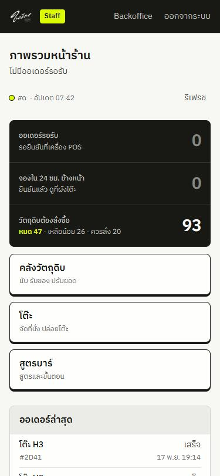
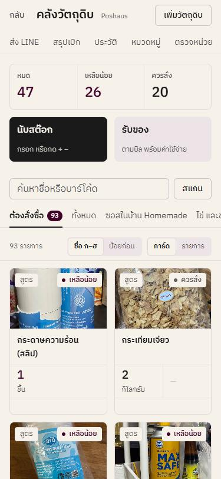
| ส่วนบนจอ | ใช้ทำอะไร |
|---|---|
| หมด / เหลือน้อย / ควรสั่ง | นับจำนวนรายการ หมด = เหลือ 0 · เหลือน้อย = ต่ำกว่าจุดวิกฤต · ควรสั่ง = ต่ำกว่าจุดสั่งซื้อ |
| นับสต๊อก | นับของที่มีอยู่จริง (ข้อ 05) |
| รับของ | ลงของเข้าตามบิล พร้อมราคาและค่าใช้จ่าย (ข้อ 04) |
| ส่ง LINE | ส่งสรุปการเคลื่อนไหวชั่วโมงล่าสุดเข้ากลุ่ม LINE (มีหน้ายืนยันก่อนส่ง) |
| สรุปเบิก · ประวัติ | ดูยอดใช้ 7 / 30 วัน และประวัติรับเข้า เบิกออก นับ |
| ตรวจหน่วย | รายการที่ตั้งหน่วยหรือราคาผิด (ข้อ 06) |
| การ์ดวัตถุดิบ | แตะเพื่อ รับเข้า / เบิกออก / ตรวจนับ ทีละรายการ ปุ่ม สูตร บนการ์ดเปิดสูตรของวัตถุดิบนั้น |
03ตั้งค่าวัตถุดิบและหน่วย
กด เพิ่มวัตถุดิบ มุมขวาบน หรือแตะการ์ด → แก้ · ฟอร์มมี 2 แท็บ
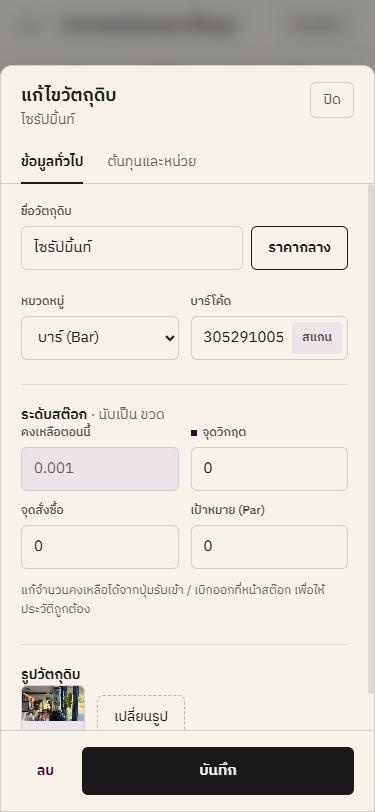
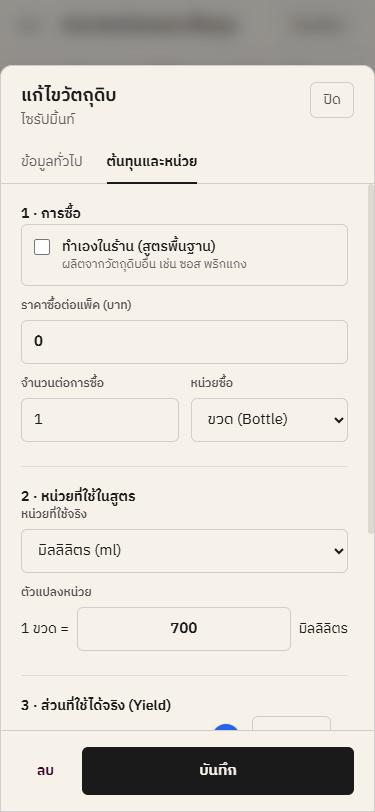
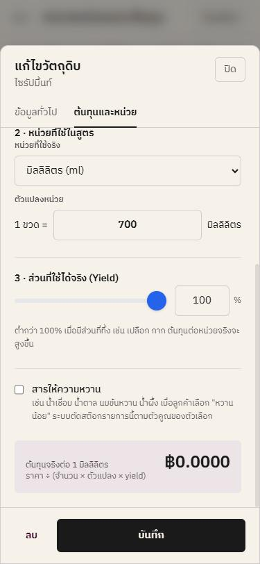
ขั้นตอน SOP
- ข้อมูลทั่วไป: ชื่อตามที่เรียกในร้าน เลือกหมวด สแกนบาร์โค้ดถ้ามี
- 1 · การซื้อ: ราคาซื้อต่อแพ็ค = ราคาที่จ่ายต่อ 1 หน่วยซื้อ · จำนวนต่อการซื้อ ปกติ = 1 · หน่วยซื้อ = สิ่งที่จับนับในคลัง (ขวด แพ็ค ถุง)
- 2 · หน่วยที่ใช้ในสูตร: เลือก มล. / กรัม / ชิ้น แล้วใส่ ตัวแปลงหน่วย ตามฉลาก เช่น 1 ขวด = 700 มล.
- 3 · Yield: 100% ถ้าใช้ได้หมด ต่ำกว่านั้นเมื่อมีส่วนทิ้ง (ระบบเตือนเมื่อต่ำกว่า 80%)
- สารให้ความหวาน: ติ๊กเฉพาะน้ำเชื่อม น้ำตาล นมข้นหวาน น้ำผึ้ง (อ่านข้อ 09)
- ระดับสต็อก (นับเป็นหน่วยซื้อ): จุดวิกฤต จุดสั่งซื้อ เป้าหมาย (Par) · คงเหลือตอนนี้ ใส่ได้ตอนสร้างครั้งแรกเท่านั้น หลังจากนั้นเปลี่ยนผ่านรับเข้า / เบิกออก / นับ
- ตรวจบรรทัด ต้นทุนจริงต่อ 1 หน่วยใช้ ด้านล่างว่าสมเหตุสมผล แล้วกด บันทึก
เปลี่ยนหน่วยทีหลังได้ ระบบแปลงยอดคงเหลือและสูตรที่ใช้วัตถุดิบนั้นให้อัตโนมัติ ถ้าขึ้นข้อความว่าแปลงยอดไม่สำเร็จ ให้นับรายการนั้นใหม่ทันที
04รับของเข้าบันทึกครั้งเดียว ได้ทั้งสต็อก ราคาทุน และค่าใช้จ่าย
คลังวัตถุดิบ → รับของ (/staff/stock/receive)
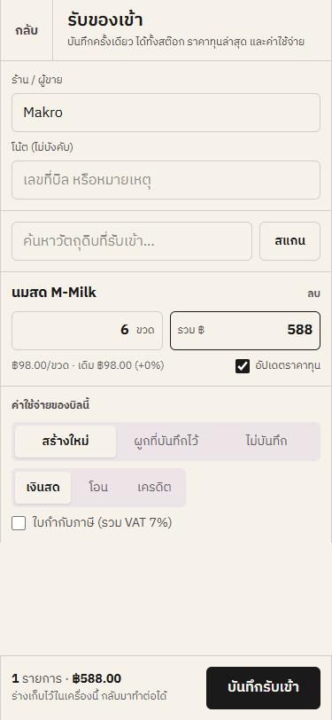
- ใส่ ร้าน / ผู้ขาย เช่น Makro ตลาด และเลขที่บิลในช่องโน้ต
- ค้นหาหรือกด สแกน ทีละรายการตามบิล (สแกน 1 ครั้ง = รับเพิ่ม 1)
- ใส่ จำนวน เป็นหน่วยนับในคลัง (ขวด แพ็ค)
- ใส่ รวม ฿ = ยอดรวมของบรรทัดนั้นในบิล ไม่ใช่ราคาต่อชิ้น ระบบหารให้เอง
- ดูราคาต่อหน่วยที่ระบบคำนวณ ถ้าต่างจากเดิมเกิน 20% ระบบจะเตือนให้ตรวจจำนวนกับราคาอีกครั้ง
- ติ๊ก อัปเดตราคาทุน ไว้ (ค่าเริ่มต้น)
- ค่าใช้จ่ายของบิลนี้: สร้างใหม่ แล้วเลือก เงินสด / โอน / เครดิต · ใช้ ผูกที่บันทึกไว้ ถ้าลงค่าใช้จ่ายไปแล้ว · ไม่บันทึก สำหรับของแถมหรือโอนย้าย
- กด บันทึกรับเข้า แล้วเลือก รับบิลถัดไป หรือ กลับหน้าคลัง
จำนวน = หน่วยนับ · ราคา = ยอดรวมตามบิล · ของที่ยังไม่มีในระบบให้เพิ่มวัตถุดิบก่อน (ข้อ 03) แล้วค่อยรับเข้า
ร่างบิลเก็บไว้ในเครื่อง ปิดแอปแล้วกลับมาทำต่อได้ · กดบันทึกซ้ำไม่ทำให้รับของซ้ำ ระบบจะขึ้นว่า "บิลนี้บันทึกไปแล้ว"
05นับสต็อก
คลังวัตถุดิบ → นับสต๊อก (/staff/stock/count) · วันทำการตัดรอบตอน 05:00
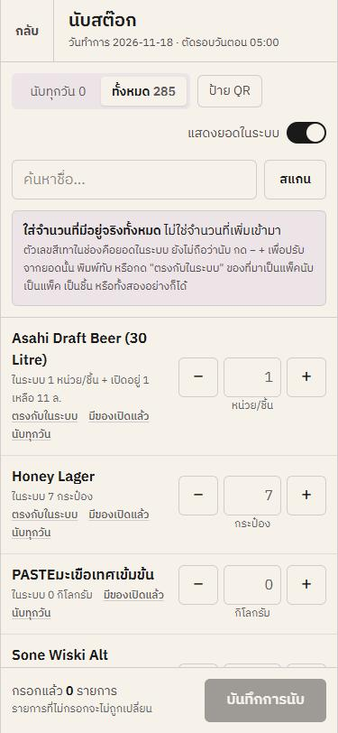
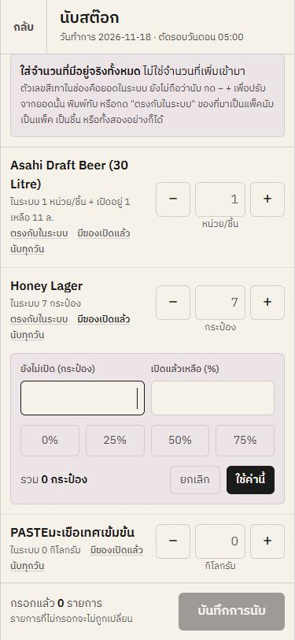
ใส่จำนวนที่มีอยู่จริงทั้งหมด ไม่ใช่จำนวนที่เพิ่มเข้ามา
รอบการนับ (ระบบเลือกจากเวลาให้เอง)
| เวลา | รอบ | หมายเหตุ |
|---|---|---|
| 05:00 – 15:00 | เปิดร้าน | นับรายการ "นับทุกวัน" |
| 15:00 – 21:00 | ระหว่างวัน | นับตามที่ระบบแนะนำ (spot count) |
| 21:00 – 05:00 | ปิดร้าน | ซ่อนยอดในระบบ นับจากของจริงล้วน ๆ · ใช้กระทบยอดใน Stock Recon |
ขั้นตอน SOP
- เลือก นับทุกวัน (รายการหลัก) หรือ ทั้งหมด
- หาเจอด้วยค้นหา หรือ สแกน ป้าย QR / บาร์โค้ดบนของ (บาร์โค้ดสินค้า = นับเพิ่ม 1 ต่อการสแกน)
- ใส่จำนวนเต็มหน่วย ด้วยปุ่ม − / + หรือพิมพ์ทับ · ถ้าตรงกับระบบกด ตรงกับในระบบ
- มีขวด/แพ็คที่เปิดแล้ว: กด มีของเปิดแล้ว → ใส่ ยังไม่เปิด และ เปิดแล้วเหลือ เป็น มล. หรือ % (0 / 25 / 50 / 75) → ใช้ค่านี้
- ช่องที่ไม่ได้กรอก ระบบ ไม่เปลี่ยน ยอด · ช่องสีแดงต้องแก้ก่อนบันทึก
- กด บันทึกการนับ แล้วดูผลต่าง "ระบบ … → นับได้ …" และมูลค่า ฿ ที่ขาด/เกิน
06เบิกออก ป้าย QR และตรวจหน่วย
เบิกออก: ของเสีย พนักงานกิน อื่น ๆ
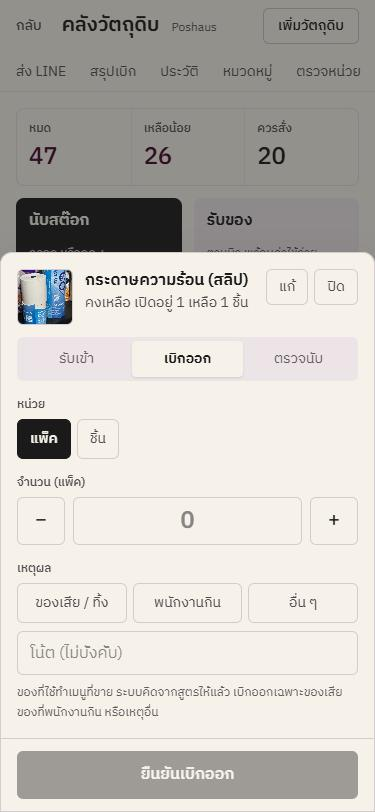
- แตะการ์ดวัตถุดิบ → แท็บ เบิกออก
- เลือกหน่วย (แพ็ค / ชิ้น) แล้วใส่จำนวน
- เลือก เหตุผล: ของเสีย / ทิ้ง · พนักงานกิน · อื่น ๆ แล้วเขียนโน้ต เช่น หมดอายุ ทำหก
- กด ยืนยันเบิกออก
ของที่ใช้ทำเมนูที่ขาย ไม่ต้องเบิกออก ระบบคิดจากสูตรให้ เบิกเฉพาะของเสีย ของพนักงานกิน หรือเหตุอื่นเท่านั้น
แท็บ รับเข้า บนการ์ดใช้รับของชิ้นเดียวแบบเร็ว ถ้ามาเป็นบิลให้ใช้หน้ารับของ (ข้อ 04) เพื่อให้ราคาทุนและค่าใช้จ่ายครบ
ป้าย QR สำหรับของที่ไม่มีบาร์โค้ด
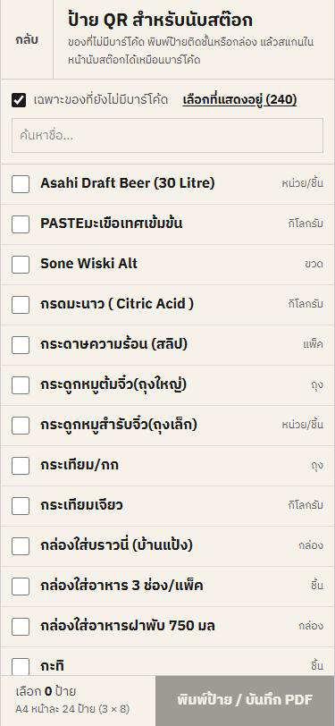
- หน้านับสต๊อก → ป้าย QR
- ติ๊ก เฉพาะของที่ยังไม่มีบาร์โค้ด แล้วเลือกรายการ
- พิมพ์ป้าย / บันทึก PDF · A4 หน้าละ 24 ป้าย (3 × 8)
- ติดป้ายที่ชั้นหรือกล่อง ป้ายบอกหน่วยนับไว้ เช่น "นับเป็น ถุง"
ตรวจหน่วยและต้นทุน
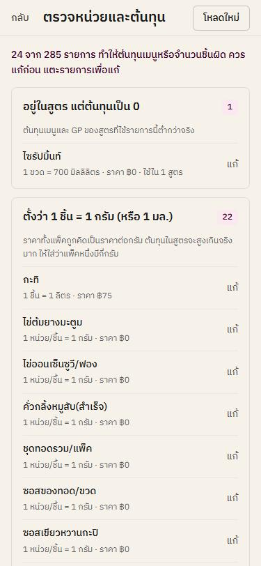
คลังวัตถุดิบ → ตรวจหน่วย แสดงปัญหาเป็นกลุ่ม แตะ แก้ เพื่อเปิดฟอร์มวัตถุดิบ
- อยู่ในสูตร แต่ต้นทุนเป็น 0 → ใส่ราคาซื้อ
- ตั้งว่า 1 ชิ้น = 1 กรัม (หรือ 1 มล.) → แก้ตัวแปลงตามฉลาก
- ตัวแปลงหน่วยเป็นไปไม่ได้ · หน่วยนับไม่ตรงกับหน่วยซื้อ
- ยังไม่ได้ตั้งหน่วย · ยังไม่ได้ใส่ราคาซื้อ
- ชื่อที่น่าจะเป็นของเดียวกัน → รวม ได้ แต่ ย้อนกลับไม่ได้ ให้หัวหน้าเป็นคนกด
07ลงสูตรเมนูและเบสสำหรับหัวหน้าบาร์ / ครัว
Backoffice → Menu & Lab → แท็บ Food & Drink → เมนู (/admin/lab)
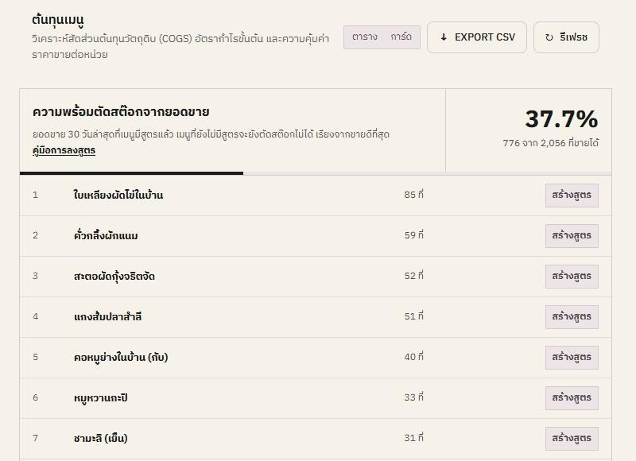
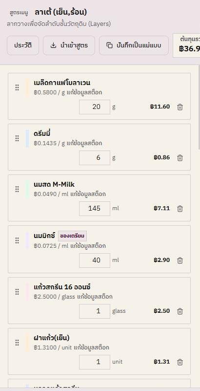
ขั้นตอน SOP
- กด + สร้างสูตร (ยังไม่มีสูตร) หรือ ปรุงสูตร (แก้สูตรเดิม)
- แผงขวา คลังวัตถุดิบ ค้นหาแล้วกด + เพิ่ม ทีละรายการ
- ใส่ปริมาณที่ใช้จริงต่อ 1 แก้ว / 1 จาน เป็นหน่วยใช้ (g, ml, glass) หน่วยต่อท้ายช่องคือหน่วยที่ระบบรับ
- ใส่ ของทุกอย่างที่หมดไปต่อ 1 ที่ รวมแก้ว ฝา หลอด ถุง ไม่ใช่แค่ส่วนผสม
- ดู ต้นทุนรวม และ % ต้นทุนด้านล่าง ถ้าเพี้ยนมาก ให้เช็กตัวแปลงหน่วยของวัตถุดิบ (ปุ่ม แก้ข้อมูลสต็อก)
- ตั้งตัวเลือกที่มีผลกับสต็อก เช่น ร้อน/เย็น ความหวาน (ข้อ 08–09)
- กด บันทึกสูตร
เครื่องมือหัวสูตร: ประวัติ ดูเวอร์ชันเก่า · นำเข้าสูตร คัดลอกจากเมนูอื่น · บันทึกเป็นแม่แบบ
เบส / ของเตรียม (ซอส เบสชา นมมิกซ์)
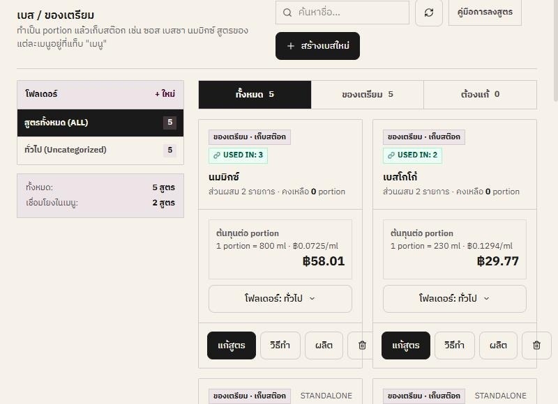
- กด สร้างเบสใหม่ ใส่ส่วนผสม และ 1 สูตร ได้กี่ มล. / กรัม (ต้องใส่)
- ผลิตเก็บไว้: ทำเสร็จกด ผลิต ใส่ว่าทำกี่สูตร และได้จริงเท่าไร ระบบตัดวัตถุดิบดิบและเพิ่มสต็อกเบส
- ตัดทะลุ: ไม่เก็บสต็อกเบส ขายเมนูแล้วตัดจากวัตถุดิบดิบตรง ๆ
- ในสูตรเมนู ใส่เบสเหมือนวัตถุดิบทั่วไป (ป้าย ของเตรียม) เช่น นมมิกซ์ 40 มล.
08ร้อน / เย็น และตัวเลือกอื่น
เมนูมี สูตรหลักสูตรเดียว ร้อน/เย็น เพิ่มช็อต เปลี่ยนนม เป็น "ตัวเลือก" ที่บวกหรือลบวัตถุดิบจากสูตรหลัก ไม่ต้องสร้างสูตรแยก
สูตรหลัก = แก้วที่ขายบ่อยที่สุด · ตัวเลือก = เฉพาะส่วนที่ต่างไป
- ใช้เพิ่ม (+) ของที่ใส่เพิ่ม เช่น เย็น +น้ำแข็ง 180 กรัม · เพิ่มช็อต +กาแฟ 18 กรัม
- ใช้น้อยลง (−) ของที่ตัวเลือกเอาออก เช่น ร้อน −แก้วพลาสติก −ฝาแก้วเย็น · นมโอ๊ต −นมสด 145 มล. แล้ว +นมโอ๊ต 145 มล.
- ปริมาณเป็น หน่วยใช้ ต่อ 1 ที่ที่สั่ง (ตัวเลขในภาพเป็นตัวอย่าง ใช้ปริมาณตามสูตรจริงของร้าน)
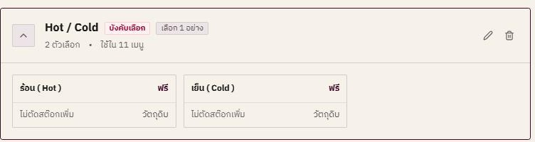
ตั้งได้ 2 ระดับ
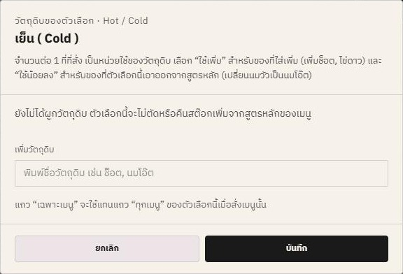
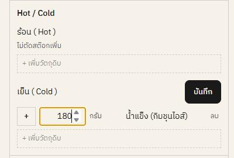
- ของที่เหมือนกันทุกเมนู (เช่น เย็น = แก้วเย็น + ฝา + หลอด) ตั้งที่ ค่ากลางทุกเมนู ครั้งเดียว
- ของที่ต่างตามเมนู (เช่น ปริมาณน้ำแข็ง) ตั้งที่ เฉพาะเมนูนี้ ในหน้าสูตร · แถวเฉพาะเมนูจะใช้ แทน แถวทุกเมนู
- เปิดสูตรเมนูแล้วเลื่อนลงไปที่ "ตัวเลือกที่มีผลกับสต๊อก" เพื่อตรวจว่าแต่ละตัวเลือกตัดอะไร
ถ้าสูตรหลักใส่แก้วเย็นและฝาไว้แล้ว (เช่นลาเต้ในภาพ 7.2) ตัวเลือก ร้อน ต้อง ใช้น้อยลง ของเหล่านั้น ไม่งั้นแก้วร้อนจะตัดแก้วเย็นด้วย · ถ้าเมนูยังไม่ผูกกลุ่มตัวเลือก ให้ผูกที่หน้าแก้ไขเมนู (Menu Catalog)
09ระดับความหวาน
ความหวานเป็น ตัวคูณ ไม่ใช่ตัวบวก: ระบบเอาปริมาณของ "สารให้ความหวาน" ในสูตร คูณด้วยตัวคูณของระดับที่ลูกค้าเลือก
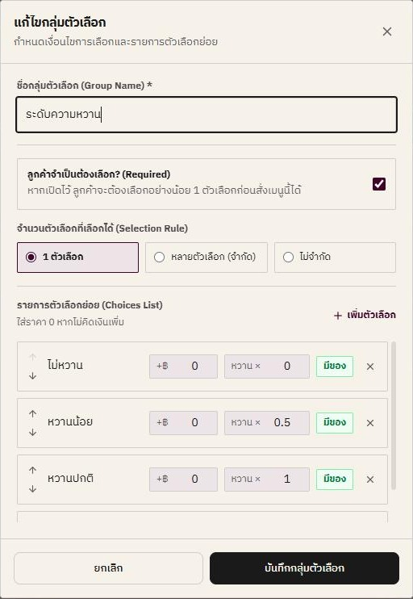
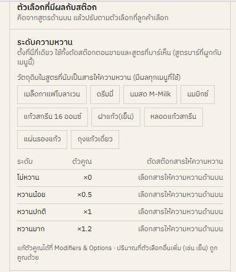
ขั้นตอน SOP
- บอกระบบว่าอะไรคือความหวาน: ติ๊ก สารให้ความหวาน ในฟอร์มวัตถุดิบ (ภาพ 3.3) หรือกดชิปในหน้าสูตร (ภาพ 9.2)
- ตรวจกลุ่ม ระดับความหวาน ว่าตัวคูณเป็น 0 / 0.5 / 1 / 1.2 (เว้นว่าง = ไม่ปรับ)
- ผูกกลุ่มระดับความหวานกับเมนูที่ลูกค้าเลือกหวานได้
- ดูตาราง "ระดับ / ตัวคูณ / ตัดสต๊อกสารให้ความหวาน" ในหน้าสูตรว่าแต่ละระดับตัดกี่ มล.
ชิปสารให้ความหวาน มีผลทุกเมนู ที่ใช้วัตถุดิบนั้น ห้ามติ๊กนม กาแฟ หรือแก้ว · ของที่ตัวเลือกอื่นเพิ่มเข้ามา (เช่น เย็น เพิ่มน้ำเชื่อม) ก็ถูกคูณด้วย · บาร์เห็นปริมาณตามระดับเดียวกันในหน้าสูตรบาร์
10SOP วิธีทำ
หัวหน้าแก้ที่ Menu & Lab → Food & Drink → วิธีทำ (SOP) · พนักงานดูที่ Staff → สูตรบาร์ (/staff/sop)
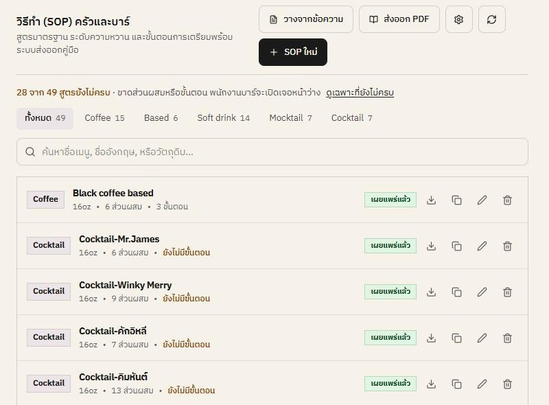
เขียน SOP (หัวหน้า)
- กด SOP ใหม่ หรือ วางจากข้อความ (วางสูตรจาก LINE) หรือดินสอเพื่อแก้
- ข้อมูลทั่วไป: ชื่อเมนู หมวด ขนาดแก้วมาตรฐาน เวลาเตรียม ระดับน้ำแข็ง
- ส่วนผสม: กด ผูกกับเมนู / เบส เพื่อดึงส่วนผสมจากสูตร (ต้นทุนและสต็อกตรงกับที่ขาย) · ถ้าไม่ผูก ส่วนผสมเป็นแค่ข้อความ ไม่คิดต้นทุนและไม่ตัดสต็อก
- ขั้นตอน: ชื่อขั้นตอน รายละเอียด จุดสำคัญ และ เหตุผล ทีละขั้น
- เปิด เผยแพร่แล้ว แล้วกด บันทึก SOP
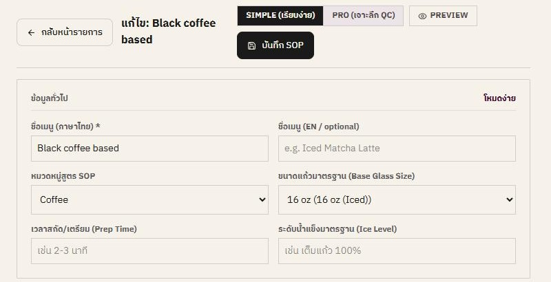
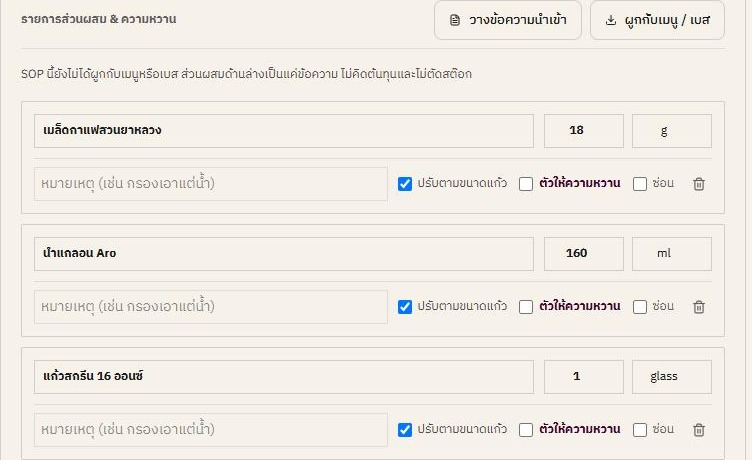
ใช้ SOP หน้าบาร์ (พนักงาน)
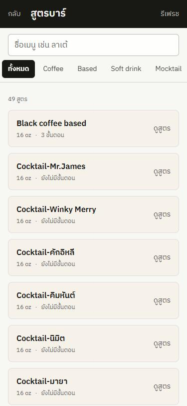
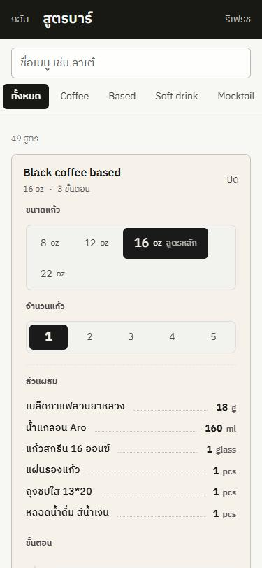
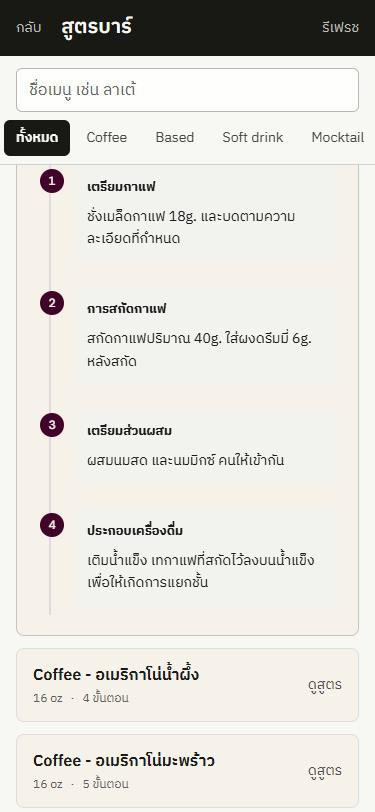
ทำตามปริมาณใน SOP ทุกแก้ว ระดับความหวานและปริมาณที่เห็นคือค่าเดียวกับที่ระบบใช้คิดสต็อก ถ้าทำเกินหรือขาดเป็นประจำ ยอดใน Stock Recon จะผิดปกติ
11Stock Recon กระทบยอดของหายหรือเกินตรงไหน
Menu & Lab → แท็บ Stock Recon (/admin/stock-recon)
Stock Recon เทียบ "ของที่ควรเหลือตามระบบ" กับ "ของที่นับได้ตอนปิดร้าน" ทุกวัน ถ้าต่างมาก แปลว่ามีอะไรไม่ได้ลง
ยอดเปิด + รับเข้า + ผลิต − ใช้ผลิต − เสีย − ใช้ตามยอดขาย = ควรเหลือ
แล้วเทียบกับ ยอดนับปิดร้าน · ต่าง = ขาด (ของน้อยกว่าที่ควร) หรือ เกิน
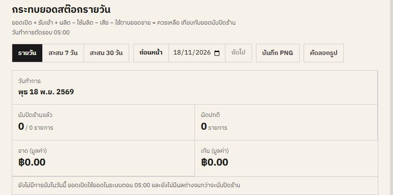
อ่านผลอย่างไร
| ช่อง | ความหมาย |
|---|---|
| นับปิดร้านแล้ว | นับไปกี่รายการ · ไม่มีการนับปิดร้าน = ไม่มีผลกระทบยอด |
| ผิดปกติ | ต่างเกิน 5% ของยอดที่ควรเหลือ และ เกิน ฿100 (ของที่ไม่มีราคาใช้เฉพาะ %) |
| ขาด / เกิน (มูลค่า) | มูลค่ารวมของส่วนต่าง เป็นบาท |
| ตามผู้นับปิดร้าน | ผลต่างแยกตามคนนับ ใช้ดูว่าต้องสอนการนับใครเพิ่ม |
เจอรายการผิดปกติ ทำอะไร
- กดชื่อรายการเพื่อดูความเคลื่อนไหว (รับเข้า เสีย ขาย นับ)
- เช็กตามลำดับ: ลืมรับของ? → ลืมเบิกของเสีย? → นับผิดหน่วย (นับเป็นชิ้นแต่ระบบเป็นแพ็ค) → สูตรผิด หรือ ตัวแปลงผิด → ทำเกินสูตร
- แก้ที่ต้นเหตุ แล้วแจ้งหัวหน้าพร้อมรูปจากปุ่ม คัดลอกรูป
สถานะตอนนี้: "ใช้ตามยอดขาย" คำนวณจากสูตร แต่ ยังไม่ตัดสต็อกจริง (shadow mode) ยอดคงเหลือในคลังเปลี่ยนจากรับเข้า เบิกออก ผลิต และการนับเท่านั้น จะเปิดตัดจริงเมื่อลงสูตรครบ ยิ่งลงสูตรถูกและนับปิดร้านทุกวัน ตัวเลขในหน้านี้ยิ่งเชื่อได้
12เช็กลิสต์ประจำวัน และข้อผิดพลาดที่พบบ่อย
| ช่วง | ทำอะไร |
|---|---|
| เปิดร้าน 05:00–15:00 |
|
| ของเข้า |
|
| ระหว่างวัน |
|
| ปิดร้าน 21:00–05:00 |
|
| หัวหน้า ทุกวัน |
|
ข้อผิดพลาดที่พบบ่อย
| ทำผิด | ผลที่เกิด | ทำให้ถูก |
|---|---|---|
| นับแค่ของที่เพิ่งมา | ยอดคงเหลือหายเกือบหมด | ใส่ ของที่มีอยู่ทั้งหมด |
| ใส่ราคาต่อชิ้นในช่อง "รวม ฿" | ราคาทุนต่ำกว่าจริงหลายเท่า | ใส่ ยอดรวมของบรรทัดในบิล |
| นับเป็นชิ้น แต่ระบบนับเป็นแพ็ค | ของเกินหรือขาดเป็นสิบเท่า | ดูหน่วยใต้ช่องตัวเลขทุกครั้ง |
| เบิกออกของที่ใช้ทำเมนูขาย | ตัดซ้ำกับระบบ ของขาดในรีคอน | เบิกเฉพาะ เสีย / กิน / อื่น ๆ |
| ลงสูตรเป็นขวด แทน มล. | ต้นทุนเมนูพุ่ง | ลงสูตรเป็นหน่วยใช้ ตามหน่วยท้ายช่อง |
| ติ๊กนมเป็นสารให้ความหวาน | หวานน้อยตัดนมครึ่งเดียว | ติ๊กเฉพาะน้ำเชื่อม น้ำตาล นมข้น น้ำผึ้ง |
| สูตรหลักมีแก้วเย็น แต่ร้อนไม่ได้ลบออก | แก้วเย็นหายเกินจริง | ตัวเลือกร้อน "ใช้น้อยลง" แก้ว ฝา หลอด |
| สร้างวัตถุดิบชื่อซ้ำ | สต็อกแตกสองที่ สูตรผูกผิดตัว | ค้นหาก่อนสร้างทุกครั้ง · ให้หัวหน้ารวม |
อย่าเดา ถ่ายรูปฉลากหรือบิลส่งในกลุ่ม LINE แล้วถามหัวหน้าก่อนบันทึก การแก้ทีหลังยากกว่าการถามก่อนเสมอ